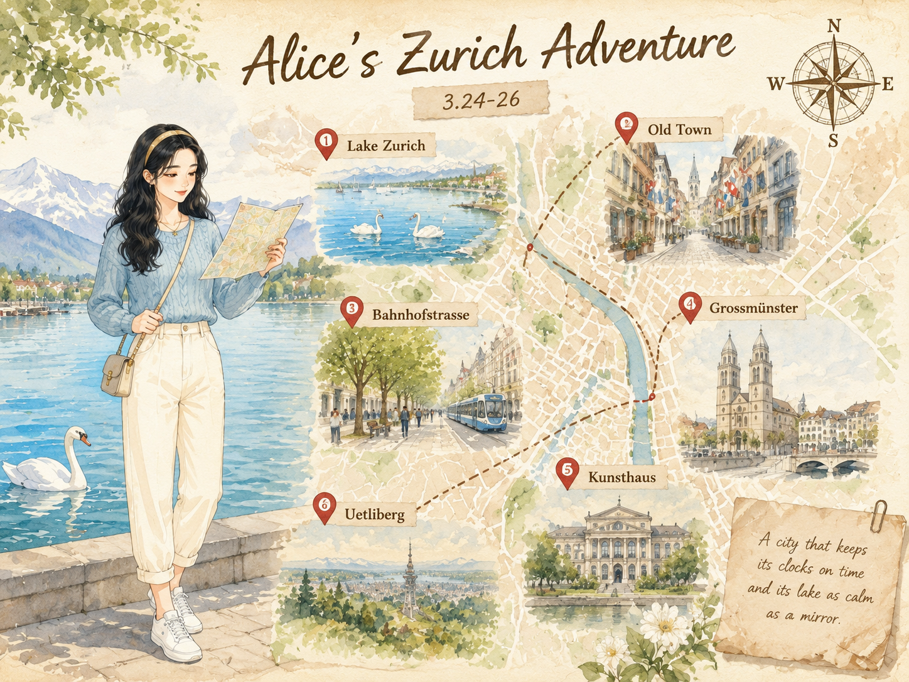
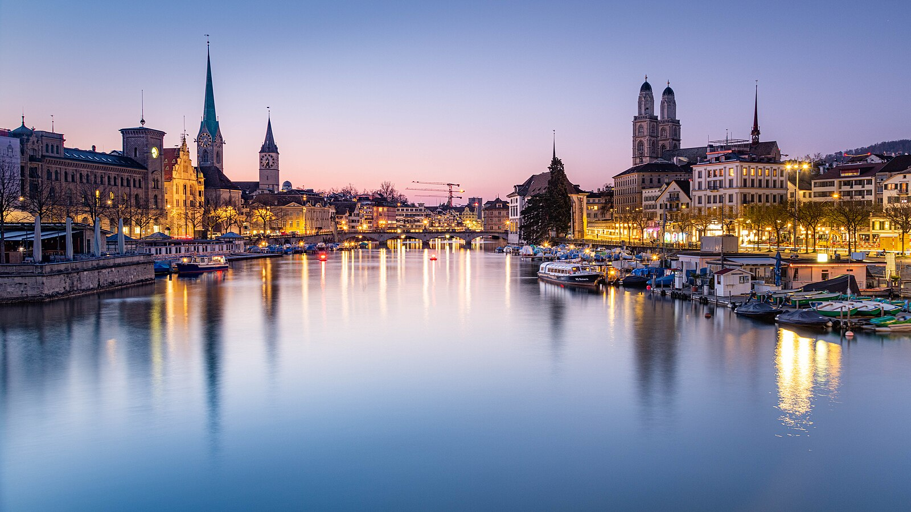
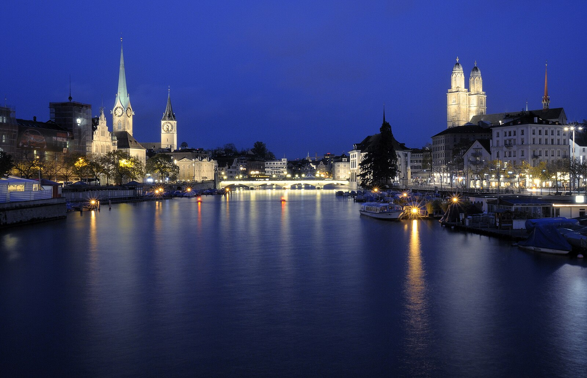
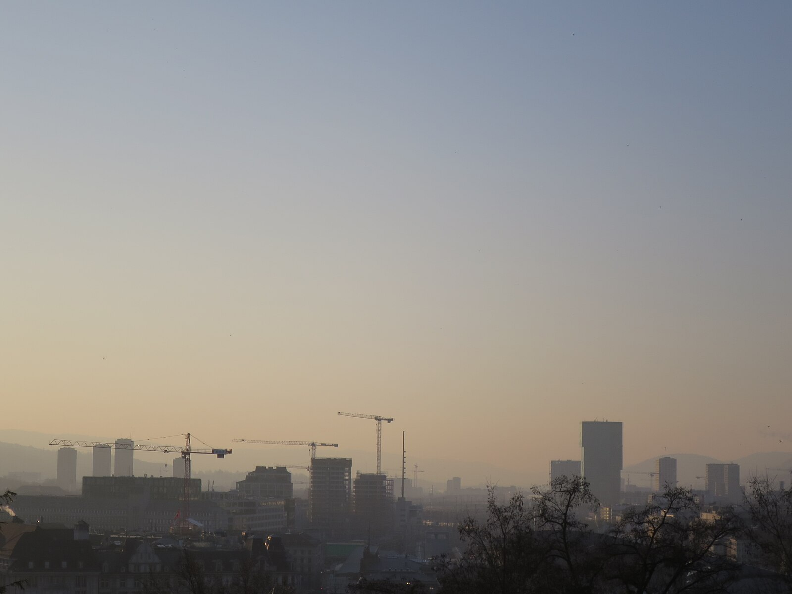

苏黎世Zurich
World-1000 · 湖岸、山景与金融城的整洁节奏
World-1000 · 湖岸、山景与金融城的整洁节奏

湖岸、山景与金融城的整洁节奏，组合出很高的完成度。
苏黎世老城在利马特河畔生长了两千年。罗马时期这里是海关，中世纪成为贸易重镇，宗教改革让这座城有了严谨的精神底色。
如今的苏黎世把古老街巷与现代金融区叠在一起，旧石板路与玻璃幕墙彼此尊重，很少互相打扰。
苏黎世的美在于层次。湖边是开阔水景，老城是密集屋顶，金融区则是利落的现代线条。
天气好的时候，从玉特利山望下去，湖、城、雪山像被精确排列过。这里的干净不是冷清，而是一种被认真维护过的秩序。
苏黎世的电车准时到近乎固执，车站电子屏精确到分钟。街道垃圾桶整齐排列，连湖边长椅的间距都看起来经过计算。
这里的人均巧克力消费量极高，巧克力店比书店还常见。德语是官方语言，但英语通行无阻。
苏黎世的早晨是从湖面的天鹅开始的。我沿着湖滨走，雪山在远处发着淡蓝的光，整座城市像被水洗过一样干净。这里的电车准时得让人不好意思迟到，街道上没有一片多余的东西。
我坐在湖边长椅上吃可颂，看白天鹅慢慢游近，又优雅地离开。老城巷子里有巧克力香，橱窗里的手表安静闪光。这里没有风风火火，只有一种被整理得刚刚好的节奏。
我想，慢下来，也是旅行的一种完成度。
湖岸、山景与金融城的整洁节奏，组合出很高的完成度。


